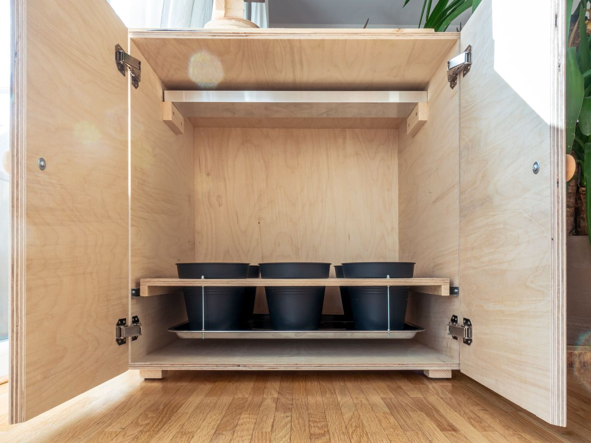

Electronics
Custom Grow Box

I designed this grow box so that I always have a fresh supply of herbs. It features ventilation and lighting, the spectrum of which can be adjusted as required (blue light for compact plants and red light for taller ones).

The flowerpot holder can be pulled out like a drawer, which makes it easier to care for the plants.